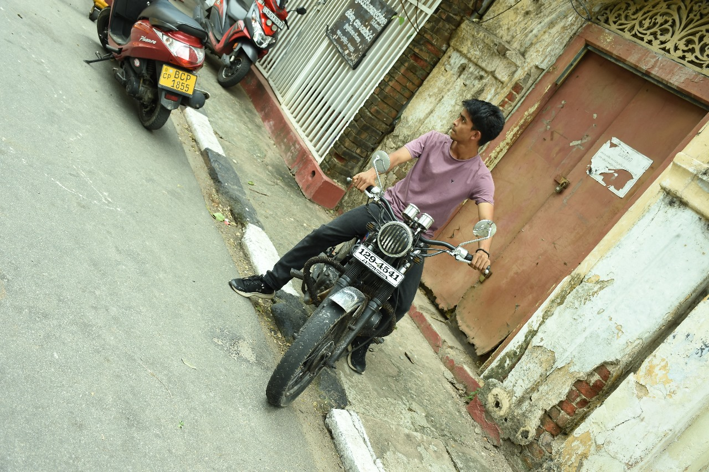

As an avid traveler, I am passionate about discovering new destinations, immersing myself in diverse cultures, and sharing unforgettable experiences. My adventures are driven by curiosity and a desire to inspire others to explore the wonders our world has to offer. Through this blog, I aim to document my journeys, provide practical tips, and offer insights into the unique places I visit. Whether it’s hiking through breathtaking landscapes, tasting local cuisines, or connecting with people from different backgrounds, I believe that travel enriches our lives and broadens our perspectives. Join me as I explore the beauty and diversity of our planet.

Cultural ExplorationDiscover the traditions, history, and stories that shape each destination. From ancient temples to vibrant festivals, every place has a unique cultural heartbeat. |
Food AdventuresTaste the world through its flavors. From street food stalls to authentic local dishes, every meal tells a story of heritage and community. |
Wildlife SafarisEmbark on thrilling adventures to observe animals in their natural habitats. From the savannahs of Africa to the jungles of Asia, wildlife safaris offer a chance to connect with nature and witness the beauty of the animal kingdom. |
Beach VacationsRelax and unwind on pristine shores, where sun, sand, and sea create the perfect backdrop for rejuvenation. Beach vacations offer a blend of leisure and adventure, from water sports to exploring coastal ecosystems. |